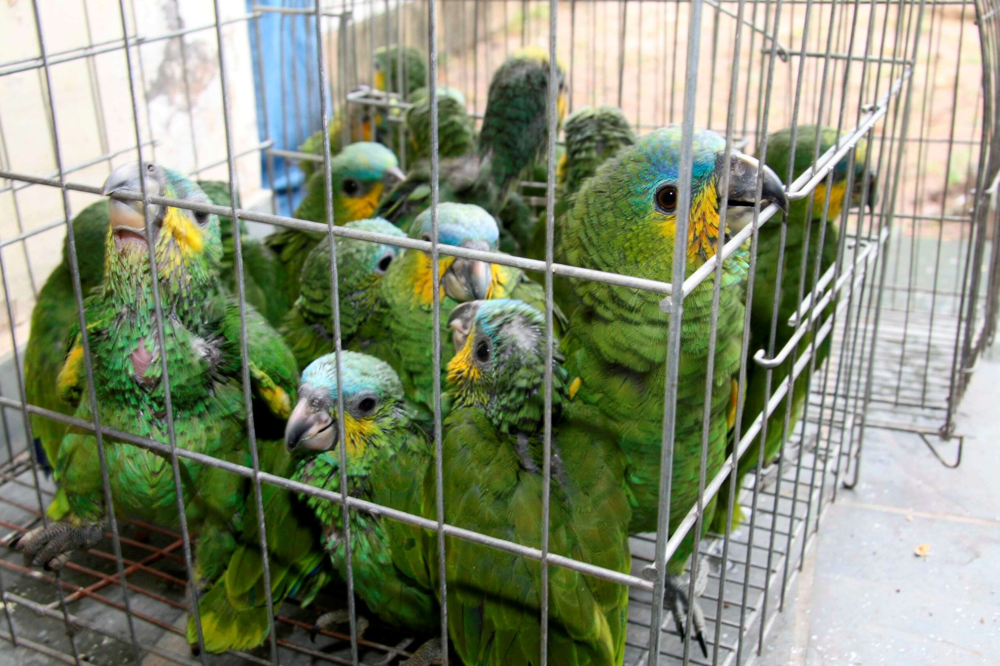
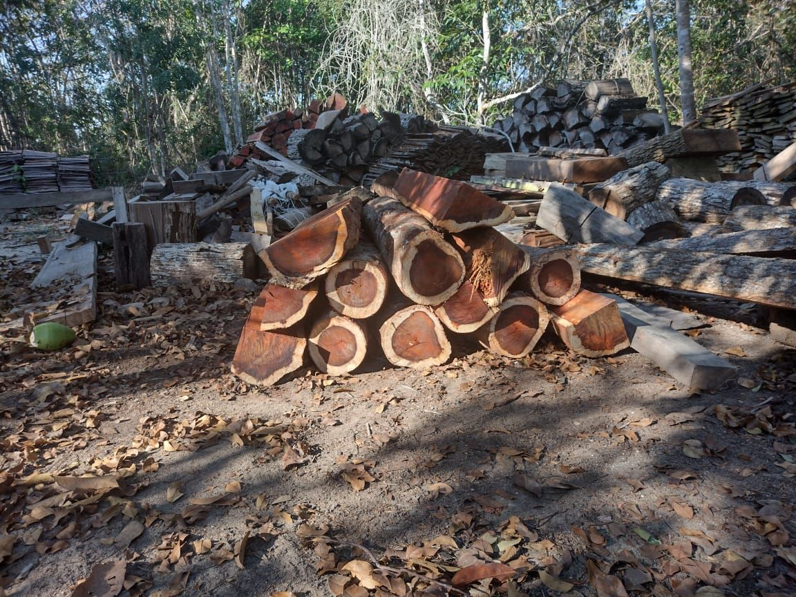
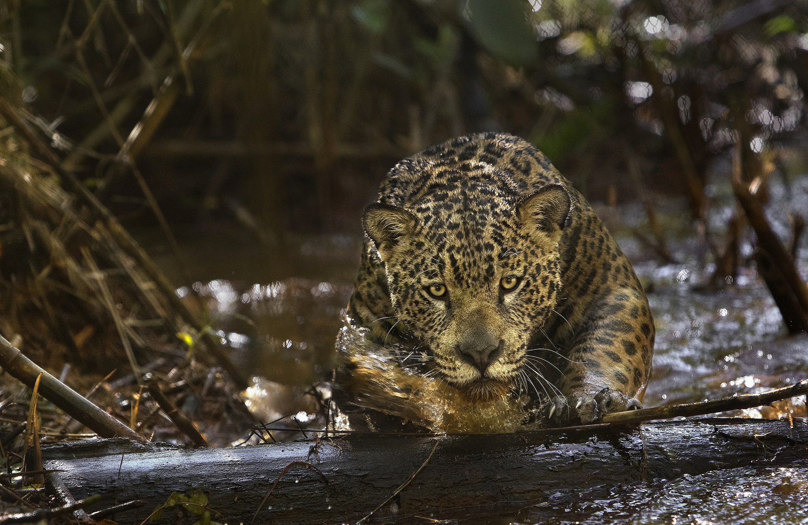
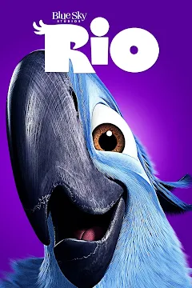

Biopirataria:
Animais, plantas, microorganismos e outros recursos biológicos.
O que é a Biopirataria?
É o nome dado à exploração e utilização de recursos naturais ou conhecimento tradicional a respeito desses recursos de forma ilegal. A exploração, manipulação, exportação de recursos biológicos, com fins comerciais, e tem ínsita a ideia de contrabando de espécimes da flora e da fauna com apropriação de seus princípios ativos e monopolização desse conhecimento por meio do sistema de patentes, na esteira das leis de direito de propriedade intelectual do GATT e da Organização Mundial do Comércio (OMC).
Como acontece a biopirataria no Brasil?
A ativista ambiental e indiana Vandana Shiva sugere que a biopirataria no Brasil teve início na época do descobrimento. Esse foi o momento em que ocorreu uma intensa exploração de pau-brasil. Essa espécie, que era usada pelos indígenas para a fabricação de corantes, foi levada para a Europa pelos portugueses. O processo deu origem à exploração da planta e à utilização do conhecimento tradicional. Devido à intensa exploração, a árvore entrou na lista de espécies ameaçadas de extinção em 2004. Hoje, ela se encontra protegida por lei e não pode ser cortada das florestas.
Ainda há uma grande exploração não autorizada de recursos naturais em nosso país. Com os avanços na área da biotecnologia, a exploração se tornou ainda maior. Isso uma vez que transportar material genético é mais “simples” do que transportar um animal ou uma planta, por exemplo.
As principais consequências para o Brasil são:

•Perda da biodiversidade
•Extinção de espécies
•Desequilíbrio ecológico
•Prejuízos socioeconômicos
•Subdesenvolvimento da pesquisa científica e tecnológica nacional.
Políticas de combate à biopirataria devem ser implantadas, protegendo a biodiversidade brasileira dessa ação. É necessário também que haja investimentos para a realização de pesquisas. Assim, proporcionando o desenvolvimento de novos produtos através da utilização de recursos naturais encontrados no país. Para os ambientalistas, o combate a esse crime só será efetivo quando a Convenção sobre Diversidade Biológica, que continua sem a assinatura dos Estados Unidos e de outros países detentores de grande número de patentes, entrar em vigor.
Principais alvos da biopirataria
Floresta Amazônica: A Amazônia é uma das maiores florestas tropicais do mundo e abriga uma enorme diversidade de espécies de plantas, animais, insetos e microorganismos. A biopirataria na Amazônia frequentemente visa extrair ilegalmente plantas medicinais, extratos botânicos, óleos essenciais, frutas exóticas e outros recursos naturais valiosos.
Biodiversidade Marinha: As extensas costas do Brasil e seus ecossistemas marinhos, como recifes de coral e manguezais, são alvos de biopirataria. Organismos marinhos, algas, peixes e outros recursos genéticos são explorados ilegalmente para desenvolvimento de produtos farmacêuticos, cosméticos e biotecnológicos.
Plantas Medicinais e Fitoterápicos: O Brasil possui uma vasta flora com propriedades medicinais conhecidas e usadas tradicionalmente pelas comunidades locais e indígenas. A biopirataria muitas vezes mira essas plantas para desenvolvimento de medicamentos, suplementos alimentares e produtos de saúde, sem respeitar os direitos de propriedade intelectual e sem compensar devidamente as comunidades detentoras do conhecimento tradicional.
Recursos Genéticos Agrícolas: Devido à sua importância agrícola, o Brasil também é alvo de biopiratas que buscam acessar ilegalmente sementes, plantas e materiais genéticos de culturas agrícolas. Esses recursos são utilizados para desenvolver novas variedades de plantas e produtos agrícolas sem a devida compensação aos detentores legais dos recursos.
Um filme que relata sobre a biopirataria no Brasil
"Rio" é um filme de animação lançado em 2011, dirigido por Carlos Saldanha e produzido pela Blue Sky Studios. Se passa na cidade do Rio de Janeiro, Brasil. A história gira em torno de Blu, uma arara azul domesticada que vive nos Estados Unidos e é a última de sua espécie. Ele é levado de volta ao Brasil para se reproduzir com a última fêmea da sua espécie, Jade, na esperança de salvar sua espécie da extinção. No entanto, Blu e Jade são sequestrados por contrabandistas de aves exóticas, que visam lucrar com o comércio ilegal de animais. Isso ilustra um aspecto importante do enredo que é a biopirataria.
Além disso, a prática da biopirataria também é abordada no filme. Assim como na animação, a biopirataria é uma realidade comum no Brasil, mesmo sendo considerada ilegal. No caso de Blu, ele era procurado para ser traficado por ser uma ave rara com penas azuis, o que reflete a triste realidade enfrentada por muitas espécies ameaçadas de extinção.
Em sala de aula, o filme “Rio” pode ser utilizado como um instrumento para conscientizar os alunos sobre os prejuízos do tráfico de animais silvestres e a importância de combater essa prática. Após uma breve explanação sobre o tráfico de animais, sugere-se exibir o filme e promover um debate com os alunos. As discussões podem girar em torno dos riscos enfrentados por Blu e Jade, bem como dos erros de biologia perceptíveis no filme. Dessa forma, os estudantes se tornam participantes ativos na proteção da biodiversidade e na luta contra a biopirataria